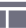

<html lang="zh">
<head>
<meta charset="UTF-8">
<meta http-equiv="X-UA-Compatible" content="IE=edge,chrome=1"> 
<meta name="viewport" content="width=device-width, initial-scale=1.0">
<title>秒拍客户端</title>
<link rel="stylesheet" href="../dist/bootstrap.min.css">
<link href="http://www.jq22.com/jquery/font-awesome.4.6.0.css" rel="stylesheet" media="screen">
<link rel="stylesheet" href="../dist/sidebar-menu.css">
<link rel="stylesheet" type="text/css" href="../css/reset.css"/>
<link rel="stylesheet" type="text/css" href="../css/style.css"/>
<script type="text/javascript" src="../js/app.js" ></script>
<style type="text/css">
body{background-color: #2E2E3E;}
.treeview img{display: inline-block;float:left;margin-right:7px;}
.leftT{margin-top:-2px;}
</style>

</head>
<body>
<aside class="main-sidebar">
<section  class="sidebar">
	<ul class="sidebar-menu">
	  <li class="treeview">
		<a href="main_4.html" target="mainFrame" class="line_1">
		   <span class="leftT" id='leftT_1'>前言</span>
		</a>
	  </li>
	   <li class="treeview"> 
		<a href="main_4_color.html" target="mainFrame" class="line_1 color_href">
		   <span class="leftT">标准色</span> <i class="fa fa-sort-up  pull-right icon_up"></i>
		</a>
		<ul class="treeview-menu">
		  <li><a href="main_4_color.html#main_color" target="mainFrame">主色调</a></li>
		  <li><a href="main_4_color.html#back_color" target="mainFrame">背景色</a></li>
		  <li class='new_li'><a href="main_4_color.html#line_color" target="mainFrame">分割线颜色</a></li>
		  <li><a href="main_4_color.html#font_color" target="mainFrame">字体颜色</a></li>
		  <li><a href="main_4_color.html#other_color" target="mainFrame">其他颜色</a></li>
		</ul>
	  </li>
	   <li class="treeview">
		<a href="main_4_font.html" class="line_1" target="mainFrame">
		   <span class="leftT">标准字</span> <i class="fa fa-sort-up  pull-right icon_up"></i>
		</a>
		<ul class="treeview-menu">
		  <li><a href="main_4_font.html#font_import" target="mainFrame">重要</a></li>
		  <li><a href="main_4_font.html#font_common" target="mainFrame">一般</a></li>
		  <li><a href="main_4_font.html#font_weak" target="mainFrame">较弱</a></li>
		  <li><a href="main_4_font.html#font_special" target="mainFrame">特殊</a></li>
		</ul>
	  </li>
	  <li class="treeview">
		<a href="javascript:void(0)" class="line_1">
		   <span class="leftT">图标</span> <i class="fa fa-sort-up  pull-right icon_up"></i>
		</a>
		<ul class="treeview-menu">
		  <li><a href="main_4_icon.html#icon_ele" target="mainFrame">要素</a></li>
		  <li><a href="main_4_icon.html#icon_style" target="mainFrame">风格</a></li>
		  <li><a href="main_4_icon.html#icon_grid" target="mainFrame">栅格</a></li>
		  <li><a href="main_4_icon.html#icon_size" target="mainFrame">尺寸</a></li>
		  <li><a href="main_4_icon.html#icon_status" target="mainFrame">状态</a></li>
		</ul>
	  </li>
	   <li class="treeview">
		<a href="javascript:void(0)" class="line_1">
		   <span class="leftT">按钮</span> <i class="fa fa-sort-up  pull-right icon_up"></i>
		</a>
		<ul class="treeview-menu">
		  <li><a href="main_4_button.html#button_import" target="mainFrame">重要</a></li>
		  <li><a href="main_4_button.html#button_common" target="mainFrame">一般</a></li>
		  <li><a href="main_4_button.html#button_weak" target="mainFrame">较弱</a></li>
		</ul>
	  </li>
	   <li class="treeview">
		<a href="javascript:void(0)" class="line_1">
		   <span class="leftT">公共控件</span> <i class="fa fa-sort-up  pull-right icon_up"></i>
		</a>
		<ul class="treeview-menu">
		  <li><a href="main_4_controls.html#control_header" target="mainFrame">头像</a></li>
		  <li><a href="main_4_controls.html#control_box" target="mainFrame">弹框</a></li>
		  <li><a href="main_4_controls.html#control_select" target="mainFrame">选择器</a></li>
		  <li><a href="main_4_controls.html#control_other" target="mainFrame">其他</a></li>
		</ul>
	  </li>
	  <li class="treeview">
		<a href="javascript:void(0)" class="line_1">
		   <span class="leftT">模块</span> <i class="fa fa-sort-up  pull-right icon_up"></i>
		</a>
		<ul class="treeview-menu">
		  <li><a href="main_4_module.html#module_1" target="mainFrame">视频</a></li>
		  <li><a href="main_4_module.html#module_2" target="mainFrame">列表</a></li>
		  <li><a href="main_4_module.html#module_3" target="mainFrame">分享面板</a></li>
		</ul>
	  </li>
	  <li class="treeview">
		<a href="javascript:void(0)" class="line_1">
		   <span class="leftT">布局</span> <i class="fa fa-sort-up  pull-right icon_up"></i>
		</a>
		<ul class="treeview-menu">
		  <li><a href="main_4_layout.html#layout_1" target="mainFrame">基础布局</a></li>
		  <li><a href="main_4_layout.html#layout_2" target="mainFrame">模块间距</a></li>
		</ul>
	  </li>
	   <li class="treeview">
		<a href="javascript:void(0)" class="line_1">
		   <span class="leftT">切图命名规范</span> <i class="fa fa-sort-up  pull-right icon_up"></i>
		</a>
	  </li>
	  <li class="treeview">
		<a href="javascript:void(0)" class="line_1">
		   <span class="leftT">组件库</span> 
		</a>
	  </li>
	  <li class="treeview">
		<a href="javascript:void(0)" class="line_1">
		   <span class="leftT" >版本</span> 
		</a>
	  </li>
	</ul>
  </section>
 </aside>

<script src="http://www.jq22.com/jquery/1.11.1/jquery.min.js"></script>
<script src="../dist/sidebar-menu.js"></script>
<script src="https://cdn.bootcss.com/jquery-cookie/1.4.1/jquery.cookie.min.js"></script>
<script>
$(function(){
	checked('../img/client_icon');
	//点击左侧侧边栏，跳转到相应主页面
	var arr=['main_4.html','main_4_color.html','main_4_font.html','main_4_icon.html','main_4_button.html','main_4_controls.html','main_4_module.html','main_4_layout.html','main_4_cut.html','main_4_UIKIT.html','main_4_version.html'];
		$('.line_1').click(function(){
			var index=$(this).parent('li').index();
			var target_page=arr[index];
			console.log(target_page)
			parent.document.getElementById('mainFrame').src="files/"+target_page;
		})
	//控制点击上一页下一页跳转到侧边栏
	if($.cookie('page_client')){
	var pagenum=$.cookie('page_client');
	console.log(pagenum);
	$('.line_1').find('.leftT').css('color','#FFFFFF');
    for(var i=1;i<=$('.line_1').length;i++){
    	   $('.line_1').eq(i-1).find('img').eq(0).attr('src','../img/client_icon'+i+'_nochecked.png')
    }
	$('.treeview').eq(pagenum).find('.line_1').find('.leftT').css('color','#00A6F5');
	var imgnum=Number(pagenum)+1;
	$('.treeview').eq(pagenum).find('.line_1').find('img').eq(0).attr('src','../img/client_icon'+imgnum+'_checked.png')
	
    }
})
</script>

</body>
</html>

